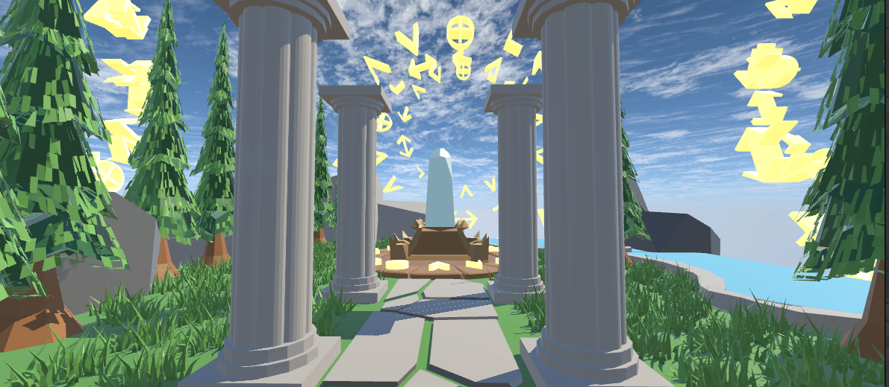
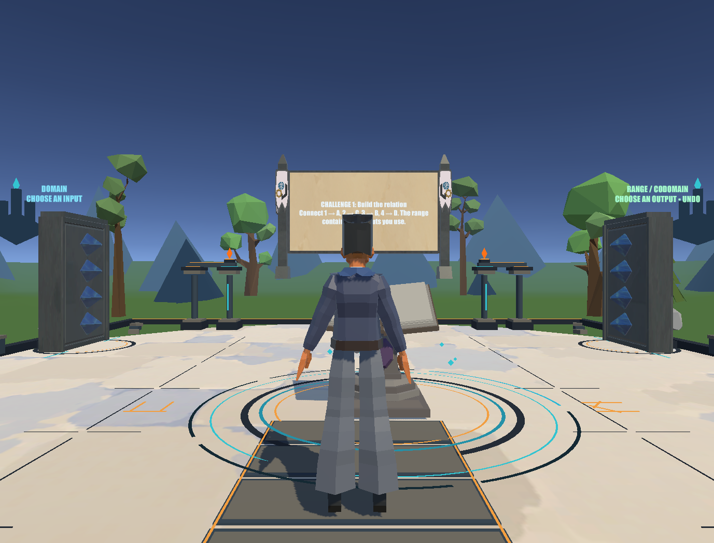
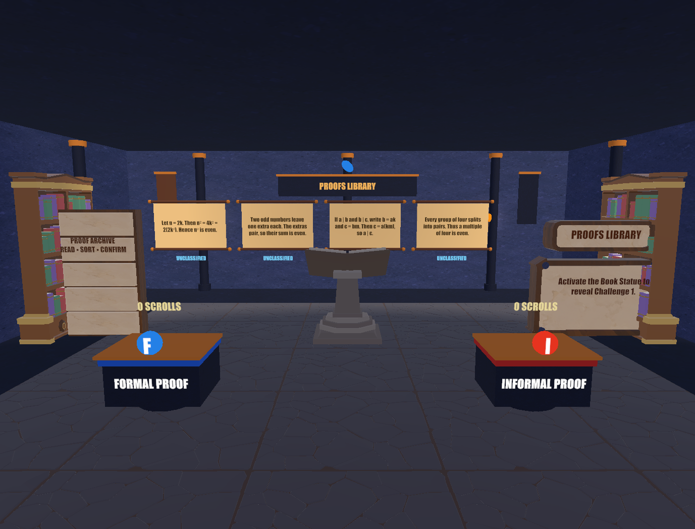
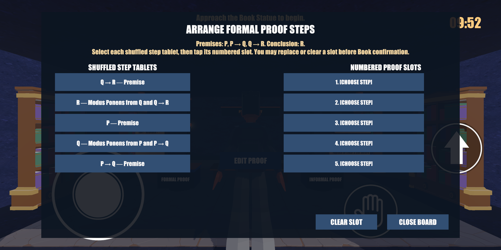

01Trials 1–3
The Awakening
- Propositional Logic
- Truth Table
- Rules of Inference
A fantasy adventure through discrete mathematics
Explore a world of books, gardens, ruins and puzzle chambers. Choose a solo trial, solve its challenge, then return to the Logic Garden to study the ideas behind it.
The adventure
Logic Legends turns discrete mathematics topics into interactive solo trials. Walk through stylized environments, approach book statues and puzzle boards, and work through questions about logic, proofs, sets, mappings, graphs and trees.
Each trial gives you a focused topic to explore. In-game help and study books give you a place to review concepts before trying again.

Play solo
Solo stage selection is organized into four groups. Select a topic to enter its scene and work through its challenges.

Explore & study
The Logic Garden is a separate place to explore and learn. Follow its introduction, find the study library, and open books that explain the topics found in the solo trials.
The library covers propositions and truth tables, proof methods, sets and relations, then graphs and trees.
Inside a trial
Move through a themed environment and find the book statue, board or station that begins the topic's challenge.
Build truth tables, arrange proof steps, connect mappings, trace graph routes or edit tree structures, depending on the trial.
Read the in-game guide, review the task, submit an answer and use the feedback to improve your reasoning.
From the game project
Captured views from the Unity project. Gameplay presentation may change as development continues.



Ready to play?
Download the Android build, choose Solo from the game menu, or visit the Logic Garden to study first.
Download Android build